Tự mã hóa · VAE · DCGAN · Pix2Pix · CycleGAN · DDPM · DDIM · Flow Matching · Stable Diffusion · CLIP
Trường ĐH Công nghệ · Đại học Quốc gia Hà Nội
Mô hình sinh học phân phối dữ liệu theo những cách nào.
AE, VAE, biến ẩn, ELBO và tái tham số hóa.
GAN, DCGAN, Pix2Pix, CycleGAN và các hàm mất mát.
DDPM, DDIM, Flow Matching, Stable Diffusion.
Bài học đi từ cách nén ảnh sang không gian ẩn, đến mô hình sinh đối nghịch, rồi đến học quá trình ngược từ nhiễu về mẫu ảnh.
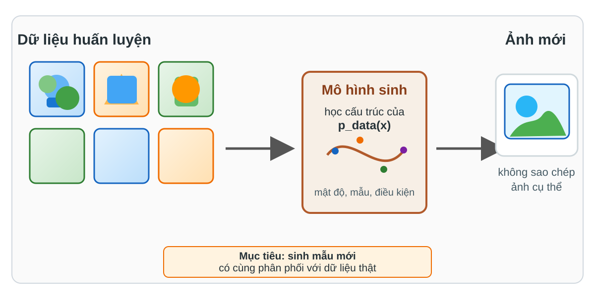
Bộ mã hóa, bộ giải mã, bộ sinh, bộ phân biệt, mạng khử nhiễu, điều kiện.
Hàm mất mát tái tạo, khớp phân phối, đánh lừa, khử nhiễu hay khớp trường vận tốc.
VAE, GAN, khuếch tán, khớp dòng.
Stable Diffusion là tổ hợp của tự mã hóa, khuếch tán trong không gian ẩn và điều kiện văn bản.
Phân phối dữ liệu · Mật độ xác suất · Lấy mẫu · Điều kiện · Hàm mất mát
Bước chuyển tư duy: không chỉ hỏi ảnh thuộc lớp nào, mà hỏi ảnh hợp lệ trong phân phối dữ liệu trông như thế nào.
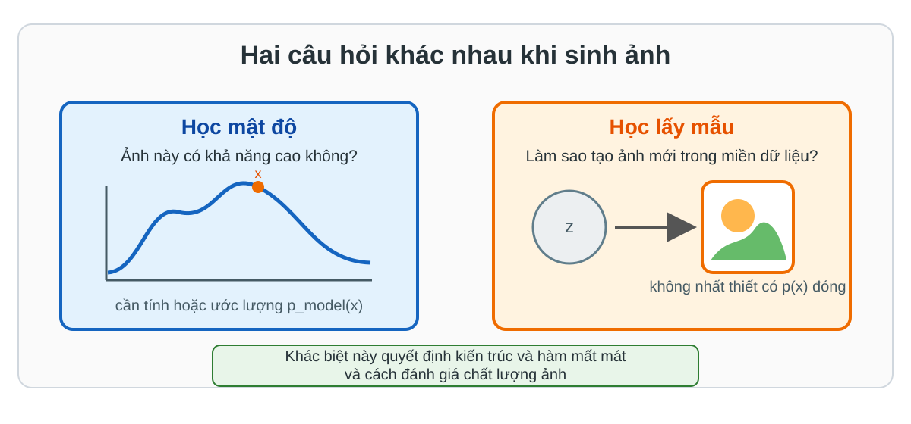
Một số mô hình cố tính hoặc xấp xỉ \(p(x)\); một số mô hình chỉ cần tạo mẫu nhìn như đến từ \(p_{\text{data}}(x)\).
Chọn ngẫu nhiên từng điểm ảnh gần như chắc chắn tạo ra nhiễu.
Ảnh tự nhiên có cấu trúc: cạnh, vùng, vật thể, bố cục.
Mỗi họ mô hình mô tả miền ảnh hợp lệ theo một cách riêng.
Tạo sinh ảnh khó vì phần lớn không gian ảnh chỉ là nhiễu không có nghĩa.
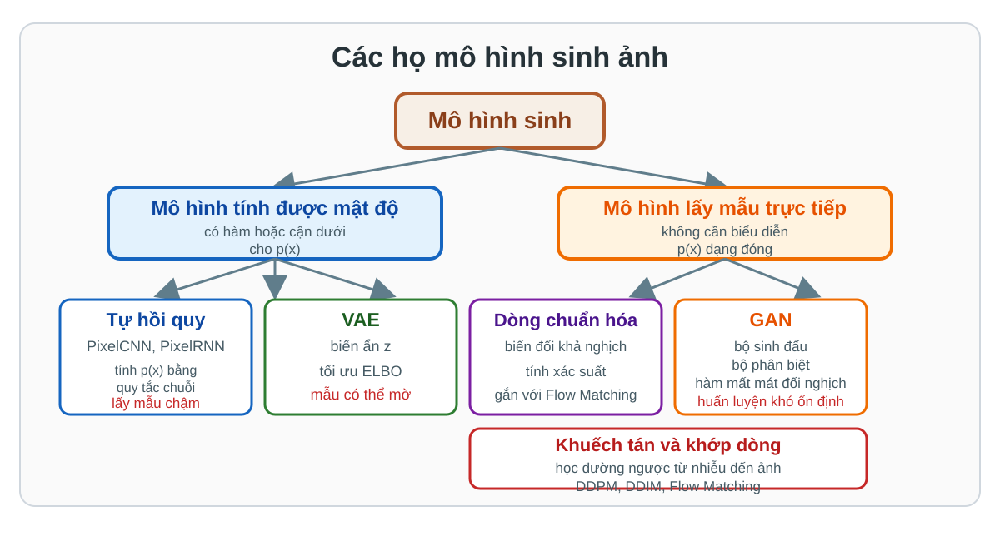
CS231n nhấn mạnh trục chính: mô hình có tính được \(p(x)\) không, và quá trình lấy mẫu là trực tiếp hay lặp nhiều bước.
Ảnh, mã ẩn, nhiễu, trường vận tốc hay điều kiện.
Tái tạo, ELBO, sinh đối nghịch, khử nhiễu, khớp dòng.
Một bước sinh hay lặp nhiều bước.
Mờ, sụp kiểu mẫu, không khớp điều kiện, nhiều bước suy luận.
Các phần sau dùng cùng khung đọc này để tránh học thuộc tên mô hình rời rạc.
Không có hàm mất mát chung cho mọi mô hình sinh; mỗi hàm mất mát phản ánh một cách nhìn về “ảnh hợp lệ”.
Bộ mã hóa · Bộ giải mã · Không gian ẩn · ELBO · KL · Tái tham số hóa
Tự mã hóa không bắt đầu bằng câu hỏi “ảnh này thuộc lớp nào”, mà hỏi “cần giữ thông tin gì để dựng lại ảnh này”.
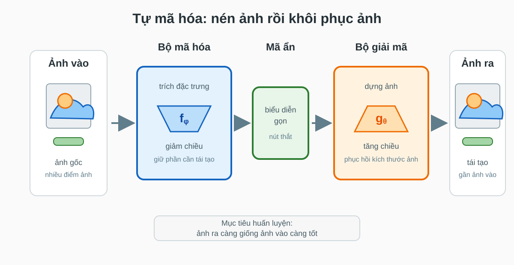
Bộ mã hóa biến ảnh thành mã ẩn \(z\); bộ giải mã biến \(z\) thành ảnh tái tạo \(\hat{x}\).
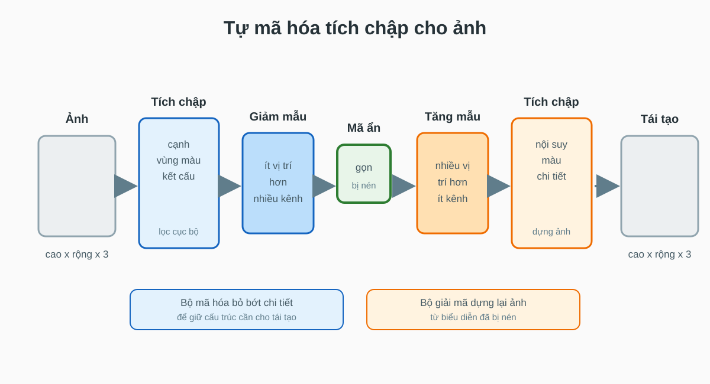
Với ảnh, bộ mã hóa thường dùng tích chập và giảm mẫu; bộ giải mã dùng tăng mẫu để phục hồi kích thước không gian.
Các tầng đầu giữ cạnh, vùng màu, hướng và kết cấu gần nhau trong ảnh.
Các tầng sâu gom thông tin về hình dạng, bố cục và thành phần chính.
Nếu \(z\) quá rộng, mạng chỉ sao chép; nếu quá hẹp, ảnh tái tạo mất chi tiết.
Chất lượng của mã ẩn phụ thuộc vào áp lực nén: mô hình phải bỏ thông tin ít quan trọng trước.
Bộ giải mã học một phép dựng ảnh hợp lý từ mã ẩn, không khôi phục từng chi tiết nếu chi tiết đó đã bị bộ mã hóa loại bỏ.
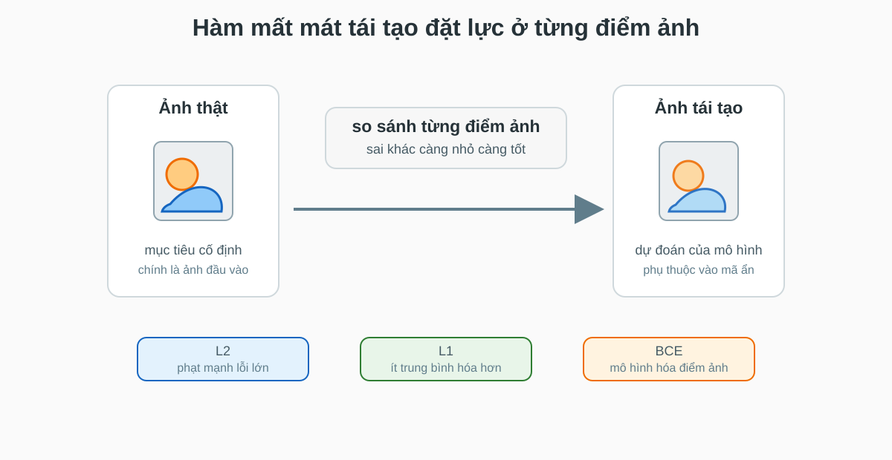
Hàm mất mát tái tạo phạt khoảng cách giữa ảnh thật \(x\) và ảnh tái tạo \(\hat{x}\), nên không cần nhãn lớp.
Mỗi điểm ảnh được kéo về giá trị trung bình làm giảm bình phương sai số.
Mạng có xu hướng chọn phương án trung bình thay vì một chi tiết sắc nét.
Biên, kết cấu nhỏ và chi tiết không chắc chắn thường bị mờ.
Đây là lý do hàm mất mát điểm ảnh đơn giản có thể tái tạo đúng bố cục nhưng không tạo ảnh sắc như ảnh thật.
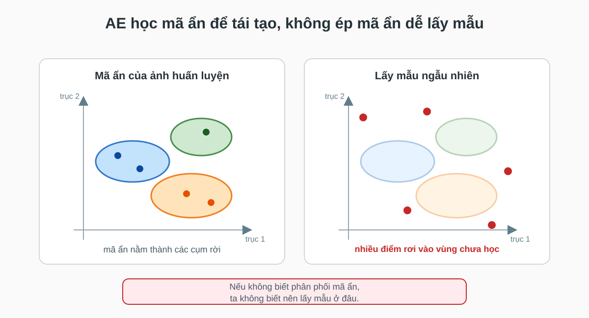
AE chỉ học mã ẩn cho các ảnh đã thấy; nó không ép toàn bộ không gian ẩn thành một phân phối liên tục, dễ lấy mẫu.
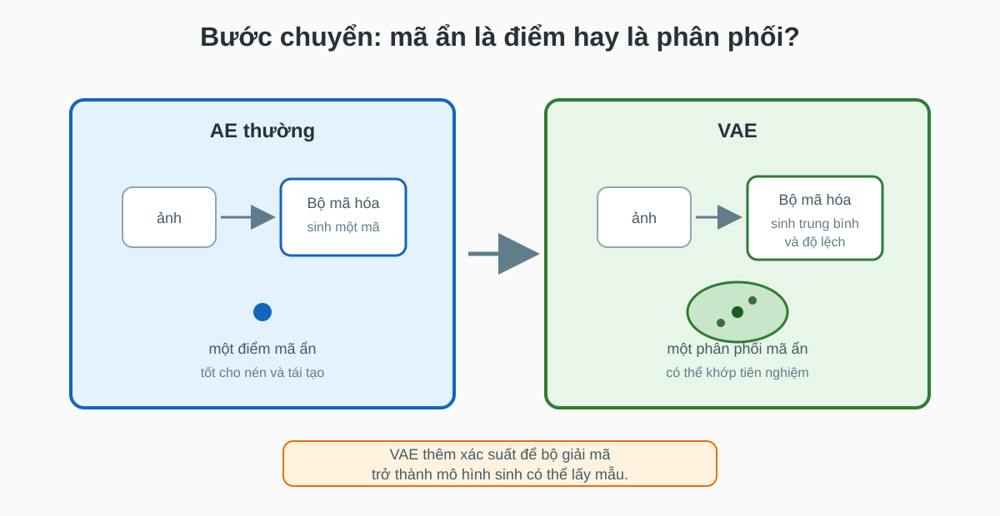
VAE biến bộ mã hóa thành mô hình xác suất: thay vì sinh một mã \(z\), bộ mã hóa sinh phân phối của \(z\) quanh ảnh đầu vào.
Bước chuyển chính: VAE học không gian ẩn có xác suất, không chỉ học một phép nén tất định.
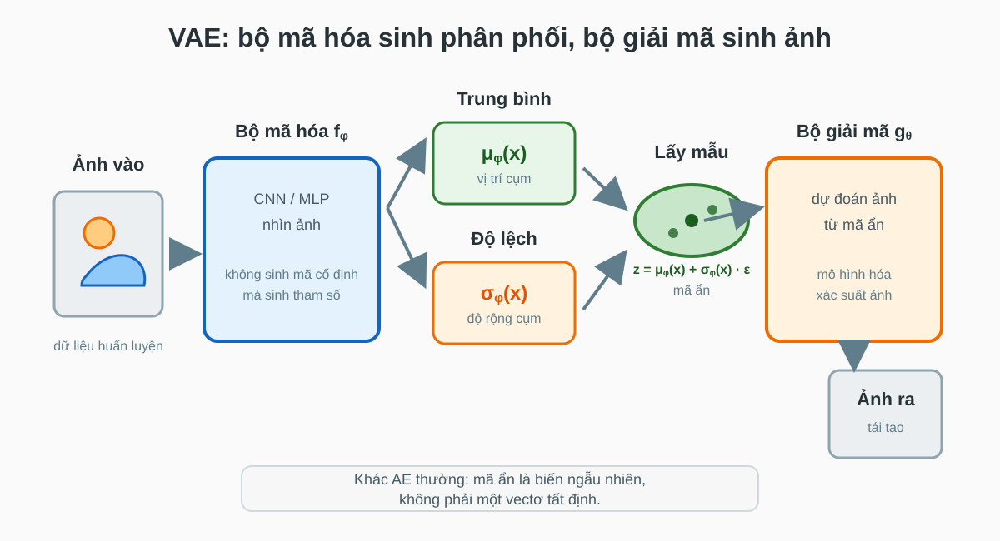
Bộ mã hóa sinh tham số của phân phối mã ẩn; bộ giải mã nhận mẫu \(z\) và mô hình hóa xác suất sinh ảnh.
Thường chọn \(p(z)=\mathcal{N}(0,I)\) để lấy mẫu đơn giản.
\(z\) chứa biến thiên chính: kiểu dáng, hướng, bố cục, nét viết.
Biến \(z\) thành phân phối trên ảnh, không chỉ một ảnh duy nhất.
Khi sinh ảnh mới, VAE không cần ảnh đầu vào: lấy mẫu \(z\) từ tiên nghiệm rồi chạy bộ giải mã.
Cho biết ảnh nên nằm gần đâu trong không gian ẩn.
Cho biết vùng mã ẩn quanh ảnh rộng hay hẹp.
Bộ mã hóa của VAE không trả về một mã duy nhất; nó trả về một phân phối để lấy mẫu mã ẩn.
Có thể dùng Bernoulli cho từng điểm ảnh.
Thường dùng Gaussian; mạng dự đoán trung bình ảnh.
Mô hình điểm ảnh đơn giản dễ làm ảnh sinh bị mượt.
Chọn dạng \(p_\theta(x \mid z)\) quyết định hàm mất mát tái tạo và loại lỗi mà VAE bị phạt.
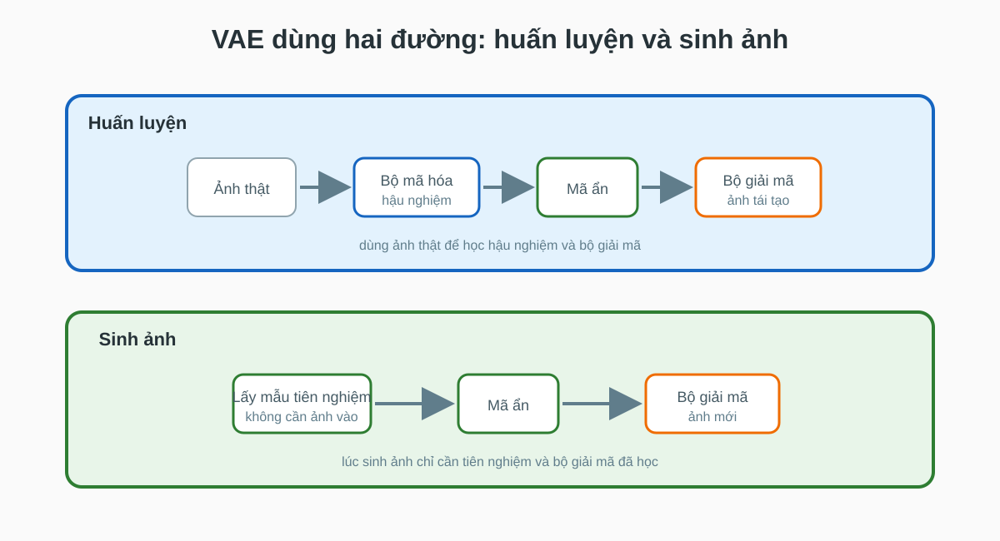
Khi huấn luyện cần ảnh thật để học hậu nghiệm xấp xỉ; khi sinh ảnh chỉ cần lấy mẫu từ tiên nghiệm và chạy bộ giải mã.
Phải cộng đóng góp của mọi mã ẩn \(z\); với mạng sâu, tích phân này không tính được trực tiếp.
Tối ưu một cận dưới có thể tính được: ELBO.
ELBO xuất hiện vì xác suất sinh ảnh cần tích phân qua biến ẩn.
Tăng khi bộ giải mã sinh lại ảnh thật tốt từ \(z\).
Giảm khi phân phối mã ẩn của ảnh lệch quá xa phân phối chuẩn.
Tối đa hóa ELBO tương đương vừa tái tạo ảnh tốt, vừa giữ không gian ẩn có luật để lấy mẫu.
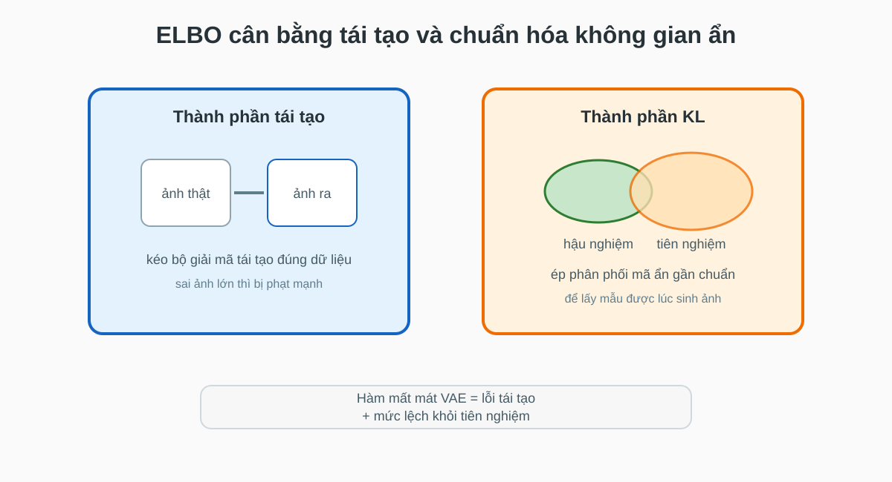
Hạng tái tạo kéo ảnh ra về dữ liệu; hạng KL kéo phân phối mã ẩn về tiên nghiệm chuẩn.
Phạt ảnh tái tạo khác ảnh thật; dạng cụ thể phụ thuộc giả định điểm ảnh.
Phạt phân phối mã ẩn quá xa phân phối chuẩn.
Dấu trừ xuất hiện vì ta chuyển từ tối đa hóa ELBO sang tối thiểu hóa hàm mất mát.
Kéo trung tâm mã ẩn về gần 0.
Không cho phương sai phình quá lớn.
Không cho phương sai co về 0.
KL buộc mã ẩn vừa gần chuẩn, vừa không biến thành một điểm cứng cho từng ảnh.
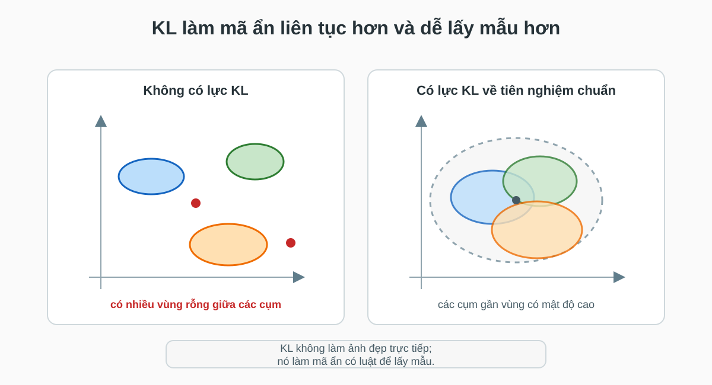
Không có KL, mã ẩn có thể rời rạc và nhiều vùng rỗng; có KL, các mã ẩn bị kéo về vùng mà ta biết cách lấy mẫu.
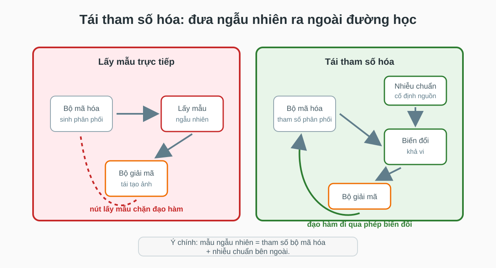
Nếu lấy mẫu trực tiếp từ phân phối của bộ mã hóa, đường truyền đạo hàm qua bước ngẫu nhiên bị đứt.
Nguồn ngẫu nhiên không phụ thuộc tham số mạng.
\(z\) là hàm khả vi theo \(\mu_\phi(x)\) và \(\sigma_\phi(x)\).
Có thể lan truyền ngược qua toàn bộ VAE.
Tái tham số hóa không bỏ ngẫu nhiên; nó đặt ngẫu nhiên ở vị trí không chặn đạo hàm.
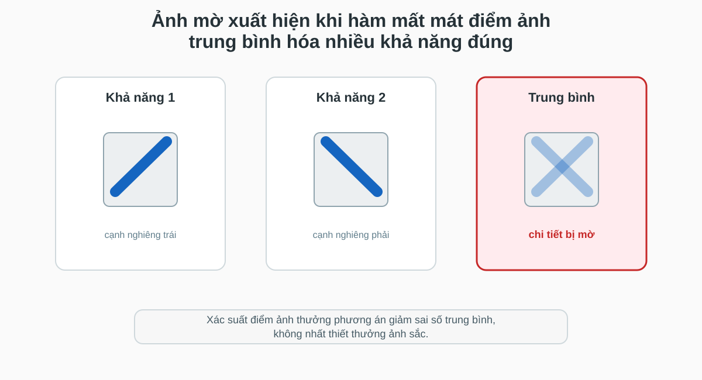
Khi nhiều chi tiết đều hợp lý, hàm mất mát điểm ảnh có thể thưởng ảnh trung bình hơn là một chi tiết sắc nét cụ thể.
VAE đổi độ sắc của mẫu lấy không gian ẩn có cấu trúc và cách huấn luyện có cơ sở xác suất.
Đưa ảnh lớn về không gian ẩn gọn để giảm chi phí tính toán.
Nội suy giữa mã ẩn thường tạo chuyển đổi mượt hơn nội suy điểm ảnh.
Stable Diffusion dùng bộ tự mã hóa để làm việc trên mã ẩn thay vì trực tiếp trên ảnh.
Ngay cả khi VAE không phải mô hình sinh ảnh sắc nhất, tư duy “sinh trong không gian ẩn” vẫn rất quan trọng.
GAN · DCGAN · Pix2Pix · CycleGAN · Hàm mất mát sinh đối nghịch · Hàm mất mát tái tạo · Hàm mất mát cảm quan
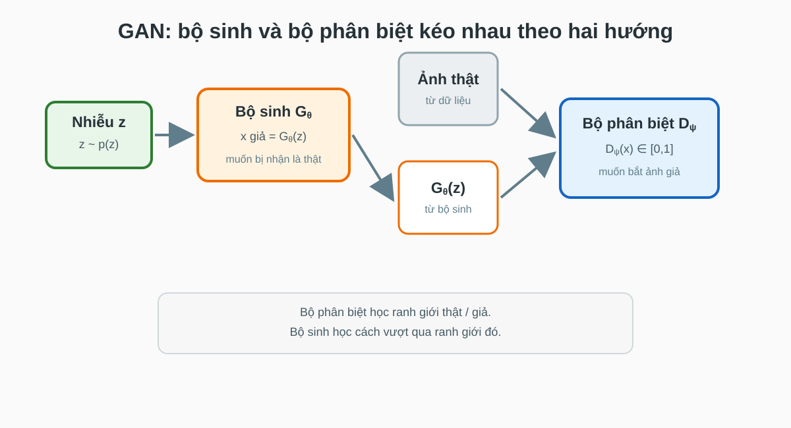
Bộ phân biệt học phát hiện ảnh giả; bộ sinh học tạo ảnh làm bộ phân biệt nhầm là thật.
Tăng \(D(x)\) với ảnh thật, giảm \(D(G(z))\) với ảnh giả.
Điều chỉnh \(G(z)\) để ảnh giả được chấm giống ảnh thật.
GAN không cần viết rõ mật độ \(p(x)\); mô hình học qua tín hiệu phân biệt thật-giả.
Giữ bộ sinh cố định, học phân biệt ảnh thật và ảnh giả.
Giữ bộ phân biệt cố định, học tạo ảnh làm bộ phân biệt nhầm.
Một bên quá mạnh làm bên kia nhận tín hiệu đạo hàm yếu.
Sự khó của GAN nằm ở động lực hai mạng cùng thay đổi, không phải chỉ ở một hàm mất mát cố định.
Bộ sinh tạo ít kiểu ảnh lặp lại nhưng vẫn qua mặt bộ phân biệt.
Hai mạng đuổi nhau, mất mát không giảm đều.
Ảnh sắc không đồng nghĩa bao phủ đủ phân phối dữ liệu.
GAN giỏi tạo ảnh sắc, nhưng phải kiểm tra cả chất lượng lẫn độ đa dạng của mẫu.
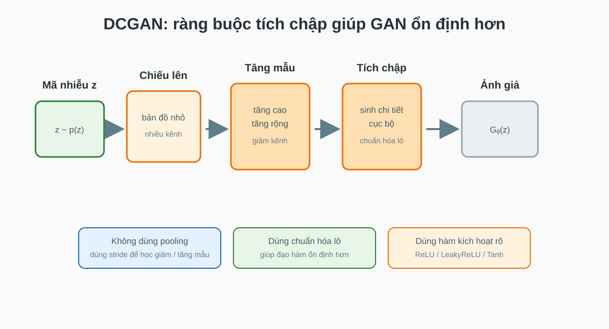
DCGAN thay mạng kết nối đầy đủ bằng kiến trúc tích chập, để bộ sinh học cấu trúc không gian của ảnh.
Tận dụng cấu trúc cục bộ và tính dịch chuyển trong ảnh.
Giảm dao động phân phối kích hoạt giữa các tầng.
Bộ sinh học cách dựng chi tiết thay vì nội suy cố định.
DCGAN không đổi bản chất đối nghịch, nhưng làm kiến trúc phù hợp hơn với ảnh.
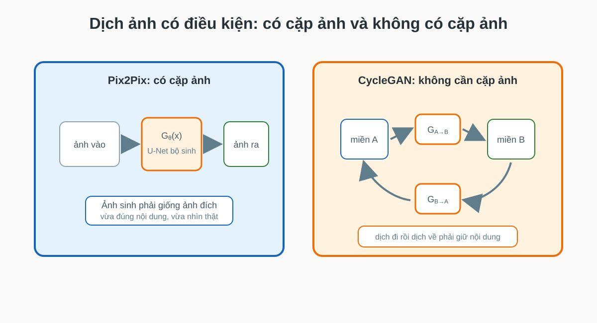
Pix2Pix cần cặp ảnh cùng nội dung; CycleGAN chỉ cần hai tập ảnh thuộc hai miền khác nhau.
Ép ảnh sinh nhìn giống ảnh thật trong miền đích.
Giữ ảnh sinh gần ảnh đích theo từng vùng tương ứng.
Pix2Pix cần cả “nhìn thật” và “đúng với ảnh điều kiện”.
Ảnh từ miền A phải nhìn như thuộc miền B.
Dịch về lại phải giữ nội dung ban đầu.
Không đảm bảo đúng từng đối tượng nếu miền khác nhau quá mạnh.
Nhất quán chu trình thay nhãn cặp ảnh bằng ràng buộc “đi rồi về phải giống ban đầu”.
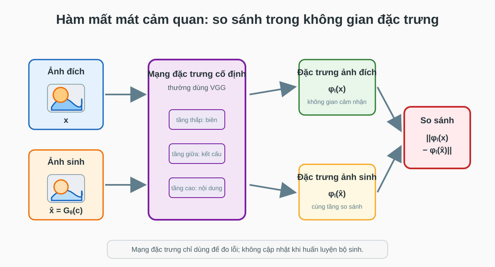
Thay vì chỉ so sánh từng điểm ảnh, hàm mất mát cảm quan so sánh đặc trưng trích từ một mạng đã huấn luyện trước.
Đặc trưng tại tầng \(l\) của mạng cố định, thường là VGG.
Ít ép khớp từng điểm ảnh, chú trọng cấu trúc và kết cấu cảm nhận được.
Giảm ảnh mờ khi dùng hàm tái tạo, nhưng vẫn cần đối nghịch để tăng độ sắc.
Trong Pix2Pix, siêu phân giải và chuyển phong cách, hàm cảm quan thường được cộng với L1/L2 và hàm đối nghịch.
DDPM · DDIM · Nhiễu thuận · Khử nhiễu ngược · U-Net · Lịch nhiễu
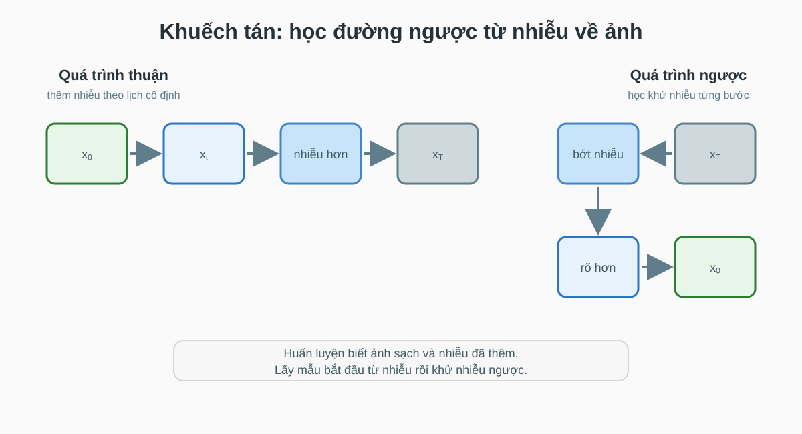
Quá trình thuận phá ảnh bằng nhiễu đã biết; quá trình ngược học khử nhiễu để sinh ảnh.
ảnh sạch từ dữ liệu.
ảnh đã thêm nhiễu ở bước \(t\).
lịch giữ lại tín hiệu ảnh sạch.
Ta có thể lấy mẫu ảnh nhiễu ở bất kỳ mức \(t\) mà không cần chạy tuần tự từ đầu.
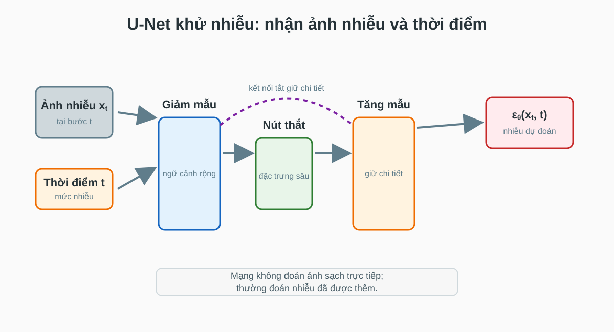
Mạng nhận ảnh nhiễu và thời điểm nhiễu, rồi dự đoán nhiễu cần loại bỏ.
Ta tự thêm nhiễu \(\epsilon\), nên biết chính xác nhiễu cần dự đoán.
Không có trò chơi hai mạng; chỉ tối thiểu hóa sai số dự đoán nhiễu.
Đây là lý do khuếch tán thường dễ huấn luyện ổn định hơn GAN.
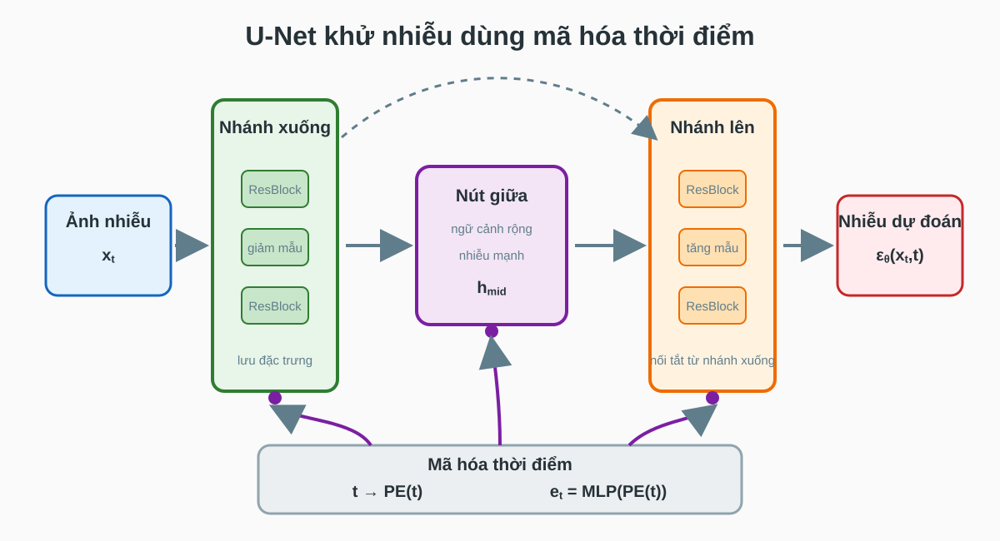
Mã hóa thời điểm cho mạng biết mức nhiễu hiện tại, nên cùng một \(x_t\) được xử lý khác nhau ở các bước \(t\).
Lấy \(x_T\) từ phân phối chuẩn.
U-Net tính \(\epsilon_\theta(x_t,t)\).
Đi từ \(x_t\) sang \(x_{t-1}\), lặp đến ảnh sạch.
Chi phí lấy mẫu cao vì mỗi ảnh cần nhiều lần chạy mạng khử nhiễu.
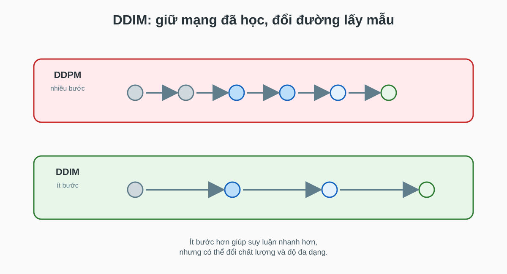
DDIM giữ mục tiêu huấn luyện nhưng đi theo đường lấy mẫu rút gọn để sinh ảnh nhanh hơn.
Mạng học sửa chi tiết nhỏ, biên và kết cấu.
Mạng học hình dạng và cấu trúc vùng lớn.
Mạng học dựng bố cục từ tín hiệu rất yếu.
Tăng \(\beta_t\) đều theo \(t\): \(\beta_t=\beta_1+\frac{t-1}{T-1}(\beta_T-\beta_1)\), \(\alpha_t=1-\beta_t\).
\(\bar{\alpha}_t=\frac{f(t)}{f(0)}\)
\(f(t)=\cos^2\left(\frac{t/T+s}{1+s}\cdot\frac{\pi}{2}\right)\).
\(f(0)=\cos^2\left(\frac{s}{1+s}\cdot\frac{\pi}{2}\right)\).
Huấn luyện ở nhiều mức nhiễu biến bài toán sinh ảnh thành chuỗi bài toán khử nhiễu.
Khuếch tán ưu tiên ổn định và chất lượng mẫu, đổi lại chi phí suy luận cao.
Flow Matching · CLIP · Stable Diffusion · Điều kiện văn bản · Hướng dẫn không dùng bộ phân loại
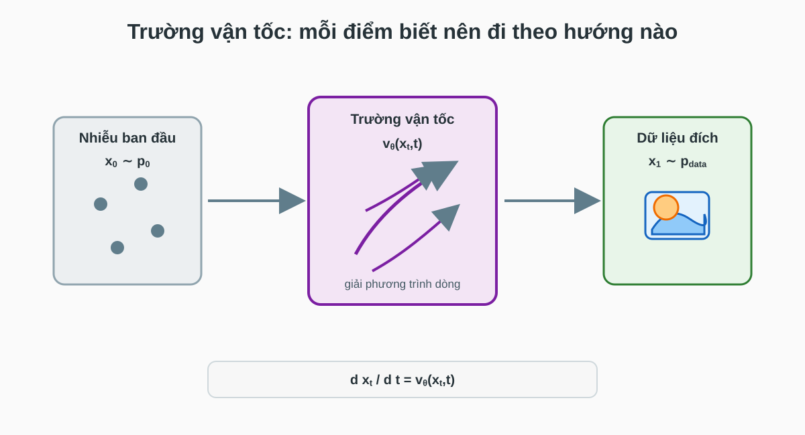
Thay vì hỏi “ảnh này có xác suất bao nhiêu?”, Flow Matching hỏi “điểm hiện tại phải dịch chuyển theo hướng nào?”.
Phân phối trung gian giữa nhiễu và dữ liệu tại thời điểm \(t\).
Trường vận tốc thật làm phân phối \(p_t\) chảy từ \(p_0\) sang \(p_{data}\).
Nếu biết trường vận tốc thật, ta chỉ cần giải ODE từ nhiễu để nhận được mẫu dữ liệu.
Cố định \(z=(x_0,x_1)\), tức một cặp nhiễu-dữ liệu, rồi dựng đường đi \(p_t(x\mid z)\) có vận tốc \(u_t(x\mid z)\).
Lấy trung bình có trọng số qua mọi \(z\) để thu được trường vận tốc thật của phân phối \(p_t(x)\).
Với \(x_t=(1-t)x_0+t x_1\), trường vận tốc có điều kiện là \(u_t(x\mid x_0,x_1)=\frac{d x_t}{dt}=x_1-x_0\).
Ta thường biết công thức có điều kiện dễ hơn nhiều so với trường vận tốc biên trực tiếp.
Ý nghĩa thực tế: có thể huấn luyện bằng trường vận tốc có điều kiện, nhưng gradient vẫn đẩy mô hình như khi khớp trường vận tốc biên.
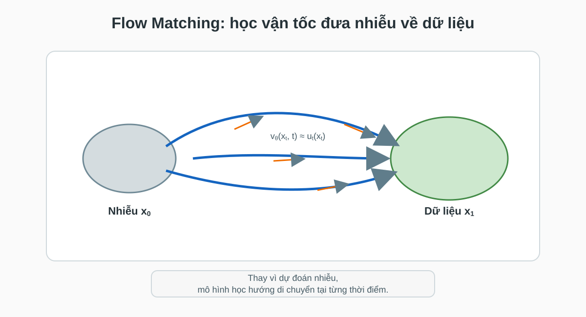
Mô hình học vận tốc tại từng điểm trung gian thay vì học trực tiếp xác suất ảnh.
Cho biết điểm trung gian nên đi theo hướng nào để về dữ liệu.
Mạng học trường vectơ để giải phương trình dòng khi lấy mẫu.
Flow Matching nhìn mô hình sinh như một dòng liên tục từ nhiễu sang dữ liệu.
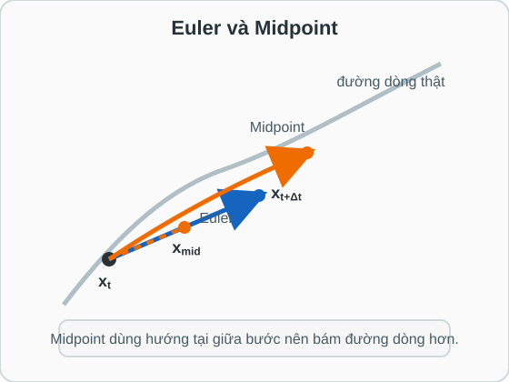
Lấy một điểm nhiễu \(x_0\) từ phân phối đơn giản.
Dùng Euler, Runge-Kutta hoặc bộ giải ODE để đi từ \(t=0\) đến \(t=1\).
Điểm cuối \(x_1\) là mẫu trong miền dữ liệu.
Khác với DDPM lấy mẫu theo chuỗi Markov ngược, Flow Matching sinh ảnh bằng cách giải một phương trình vi phân thường.
Hai hướng đều tránh trò chơi đối nghịch và đều mô tả đường đi từ nhiễu về ảnh.
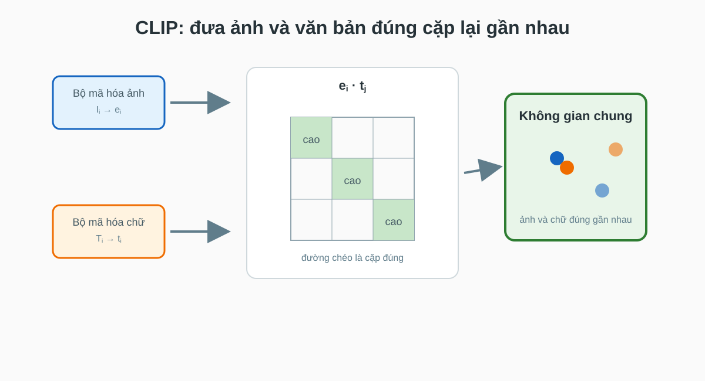
CLIP học để vectơ ảnh và vectơ văn bản đúng cặp gần nhau trong cùng không gian biểu diễn.
Ảnh và mô tả tương ứng được kéo lại gần nhau.
Ảnh và mô tả không tương ứng bị đẩy xa nhau.
Văn bản trở thành tín hiệu điều kiện có ý nghĩa thị giác.
CLIP tối đa hóa điểm tương đồng của cặp đúng trên đường chéo và giảm điểm của các cặp sai.
Đưa ảnh từ không gian điểm ảnh sang mã ẩn gọn hơn.
Học khử nhiễu để sinh mã ẩn ảnh từ nhiễu.
Dùng mô tả để dẫn hướng quá trình khử nhiễu.
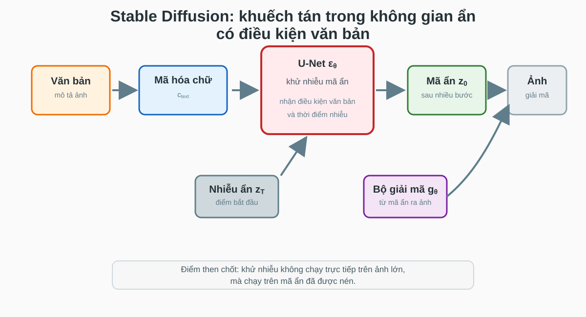
Ý chính: mô hình không sinh ảnh trực tiếp từ chữ; nó khử nhiễu trong không gian ẩn rồi giải mã thành ảnh.
Ảnh RGB lớn được nén thành mã ẩn nhỏ hơn nhưng vẫn giữ cấu trúc thị giác chính.
Stable Diffusion không khuếch tán trực tiếp trên điểm ảnh; nó làm việc trên mã ẩn của bộ tự mã hóa.
Lấy \(z_T\) là nhiễu trong không gian ẩn.
U-Net dự đoán nhiễu trong mã ẩn, không dự đoán trực tiếp điểm ảnh.
Sau khi có \(\widehat{z}_0\), bộ giải mã tạo ảnh \(\widehat{x}=D(\widehat{z}_0)\).
Cùng một nguyên lý DDPM, nhưng biến ngẫu nhiên cần sinh là mã ẩn \(z\), không phải ảnh \(x\).
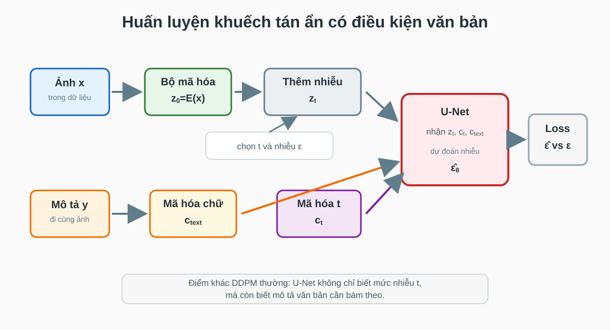
Mã hóa ảnh \(x\) thành \(z_0\), rồi thêm nhiễu để có \(z_t\).
Mô tả \(y\) được mã hóa thành \(c_{text}\) và đưa vào U-Net.
Dự đoán đúng nhiễu \(\epsilon\) khi đã biết cả \(t\) và văn bản.
So với diffusion thường, U-Net có thêm tín hiệu văn bản bên cạnh mã hóa thời điểm \(t\).
Mã ẩn nhỏ hơn ảnh, nên mỗi bước U-Net rẻ hơn.
Bộ tự mã hóa giữ thông tin thị giác chính trong mã ẩn.
Sau khi khử nhiễu, bộ giải mã đưa mã ẩn về ảnh RGB.
Ý tưởng phần 2 quay lại ở đây: không gian ẩn làm bài toán sinh ảnh rẻ và dễ điều khiển hơn.
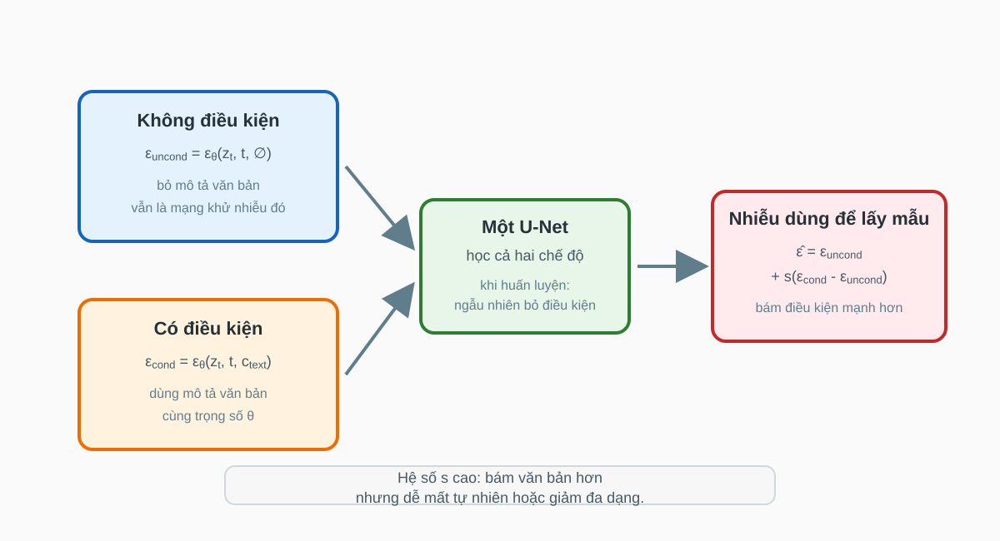
Cùng một mô hình khử nhiễu được gọi hai lần: một lần bỏ điều kiện, một lần có văn bản, rồi trộn hai dự đoán nhiễu.
Ảnh tự nhiên hơn nhưng có thể lệch mô tả.
Cân bằng giữa bám mô tả và chất lượng ảnh.
Bám chữ mạnh nhưng dễ tạo ảnh gắt, lặp hoặc kém đa dạng.
Hướng dẫn không dùng bộ phân loại là hệ số chỉnh mức bám mô tả, không phải bảo đảm đúng tuyệt đối.
| Họ mô hình | Học gì? | Mạnh ở đâu? | Yếu ở đâu? |
|---|---|---|---|
| VAE | không gian ẩn xác suất | ổn định, có cấu trúc | ảnh dễ mờ |
| GAN | qua bộ phân biệt | ảnh sắc | khó ổn định |
| Khuếch tán | khử nhiễu ngược | chất lượng cao | lấy mẫu chậm |
| Flow Matching | trường vận tốc | đường sinh liên tục | cần giải đường dòng |
Không có mô hình thắng tuyệt đối; mỗi họ chọn một cách đặt bài toán và một loại hàm mất mát khác nhau.